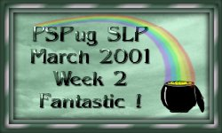
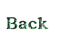

|
The assignment for this week is: Make two (2) more spiderweb images using the techniques learned in the tutorial and post all three (3)--The one from the tutorial as well as the 2 new ones to your homework page.
Thank you very much for this robbon. I am proud to display it on my page.   |